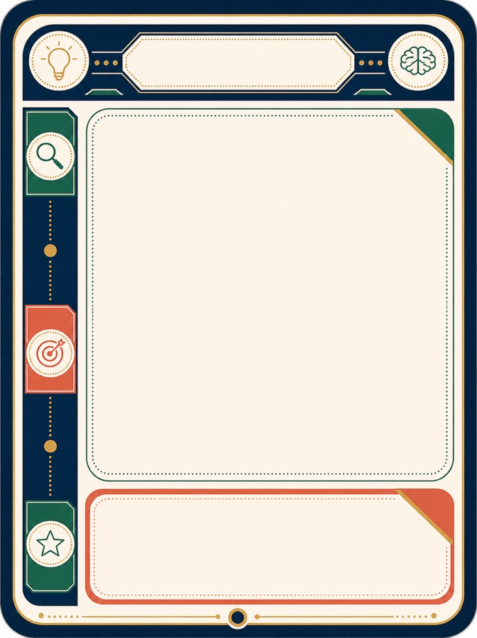
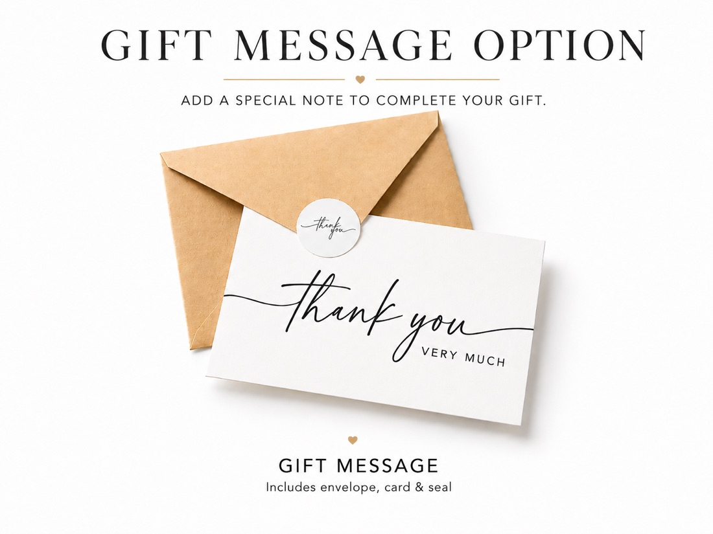
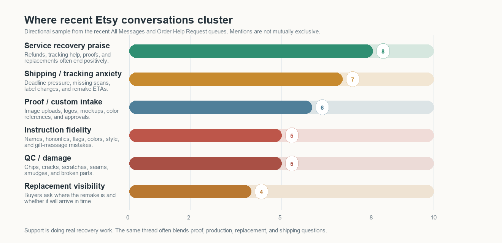

Teacher appreciation peaks differently than graduation, boss gifts, medical office gifts, or back-to-school.
Investor Update | June 2026
Cronk / MyMaravia: The Tokenification Of Everything
Every product surface, buyer moment, image, listing, order update, and customer interaction can become addressable.
MyMaravia: A custom product. A custom experience.
10.2M+
review rows in the Cronk Research corpus
25,873
shops tracked in the review corpus
1.9M+
listing URLs mapped across buyer moments
5 layers
from market timing to algorithmic deployment
The thesis
Personalization is moving beyond the product.
Hi everyone,
I want to use this update to explain the larger idea behind what we have been building.
The easiest way to say it is this: every surface area that exists should eventually be customized to the audience it is serving.
That includes the product itself, the listing, the image, the ad, the landing page, the email, the packaging, the customer-service answer, the order-status page, and eventually the feed that decides what someone sees next.
When I say "the tokenification of everything," I do not mean crypto. I mean that every buyer moment, every product surface, every design variation, every staged environment, every order state, and every channel surface can become an addressable unit. It can be measured, customized, routed, and improved.
The operating model
The customization stack: every surface can become addressable.
The first version is not one giant platform. It is a sequence of useful layers: time, product, artwork, title, description, tags, scene, offer, order experience, feedback, and feed routing. Each layer can earn, teach, and fund the next one.
The same acrylic, wood base, LED base, card, or board becomes a reusable substrate.
Florals, icons, school motifs, medical cues, and brand assets move with the buyer moment.
"Teacher Appreciation Gift" and "Doctor Graduation Gift" can point to the same production grammar.
The promise, use case, sizing, personalization instructions, and gift language can be rewritten per audience.
Search terms become routing tokens: teacher gift, nurse practitioner desk, dental office decor, boss nameplate.
The same product means something different on a classroom desk, clinic counter, executive desk, or gift table.
Price, sale framing, shipping promise, bundle, rush option, and gift message all become testable surfaces.
Customer service, production, packaging, label creation, transit, and delivery can all be visible.
Reviews, messages, remakes, tracking, QC, and market data decide what changes next.
Layer one
Customizing time
A teacher appreciation gift is not just a product. It is a moment. A graduation gift, a new doctor gift, a boss promotion gift, a Father's Day gift, and a back-to-school classroom gift each have different timing, language, and visual expectations.
Cronk Research reads those signals before we commit capital and production time.
Buyer moment calendar
Selected LED nameplate rows
Teacher / classroom
Created May 3, 2026. Peak week May 18, 2026.
52.3%
Doctor graduation
Created May 9, 2026. Peak week May 18, 2026.
19.8%
Office / boss
Created Apr. 7, 2026. Peak week May 4, 2026.
18.3%
Dental office
Created May 12, 2026. Peak week May 18, 2026.
9.6%
Layer two
Customizing the product surface
The nameplate is not just a listing. It is a productized surface: clear acrylic, base, repeatable production process, personalized design area, and a SKU mapping that can serve many buyer moments.
Once the substrate is productized, the creative layer can move much faster.


Layer three
Customizing the scene
The product is only part of what the buyer is buying. A classroom, medical office, executive desk, graduation table, wedding prep room, or home office changes what the product means.
The scene is not decoration. The scene is targeting.

Layer four
Customizing the order experience
For custom products, the customer often needs proof of progress before the UPS or FedEx scan exists. Cronk can expose where the order actually is: customer service, production, packaging, shipping, and then carrier tracking.
This turns production context into customer-facing reassurance.
Jun 1
Order created
Jun 1
Customer service
Jun 2
Production
Jun 2
Packaging
Jun 3
Label created
Jun 6
Delivered
Layer five
The algorithmic feed
The feed does not have to start as a consumer app. It starts as practical routing: which listing to create, which staged image to test, which order-status update to show, and which surface deserves more capital.
The long-term business is the operating system for adaptive commerce.
Wedding favor
Gift table scene

Teacher gift Back-to-school timing
Self-care set
Holiday bundle
Feed decision
Template + artwork + title + tags + scene + promise
The "card" is not just art. It is a bundle of surfaces selected for the moment.
Proof in the current system
One product grammar, many buyer moments.

| Buyer moment | Example listing | Created / peak week | Recent 30D sales | Sale-adjusted 30D revenue | Selected-row share | Signal |
|---|---|---|---|---|---|---|
| Teacher / classroom | Teacher Appreciation Gift, Personalized LED Teacher Desk Nameplate | Created May 3, 2026. Peak week May 18, 2026. | 174 | $6,380.58 | 52.3% | Rising |
| Medical / doctor | Doctor Graduation Gift, Personalized LED Doctor Desk Name Plate | Created May 9, 2026. Peak week May 18, 2026. | 66 | $2,420.22 | 19.8% | Rising |
| Office / boss | Personalized LED Name Plate, Custom Acrylic Desk Sign with Wooden Base | Created Apr. 7, 2026. Peak week May 4, 2026. | 61 | $2,236.87 | 18.3% | Still material, currently falling |
| Dental office | Personalized Dentist LED Nameplate, Custom Dental Office Desk Sign | Created May 12, 2026. Peak week May 18, 2026. | 32 | $1,173.44 | 9.6% | Rising |
Cronk Research
Product discovery becomes the customization of time.
Open the live Cronk Research dashboardPublic Etsy surfaces, listing tags, thumbnails, reviews, shop velocity, and eRank market signals are organized into buyer-moment views.
Teacher Gifts, Graduation, Father's Day, Birthday, LED Nameplates, and other views show which buyer intents are moving.
MyMaravia can launch or adjust productized surfaces when the market is already pulling.
Closing the improvement loop
Reviews and customer messages become process intelligence.
The customer-signal report is useful because it is direct. Here is what customers are saying, where the process is leaking trust, and what should change in production, proofing, packaging, shipping promises, and remake handling.
Open the customer signal report PDF
59
recent Etsy reviews analyzed
40
recent message/help rows inspected
93%
five-star rate in the review sample
5
operating initiatives pulled from the signals
What customers are saying
- 36 recent reviews mention beauty, quality, craftsmanship, or premium feel.
- 22 reviews position the product as a successful gift moment.
- 9 reviews still mention shipping delay, delivery promise friction, or arrival anxiety.
- Message/help clusters show repeat questions around proofing, instruction fidelity, QC, replacements, and tracking.
Company context loop
Signals come from multiple layers of the business, not one dashboard.
Etsy API reviews
Etsy messages
Cronk order context
SKU and product files
Production and remake notes
Shipping and tracking state
Cronk Research timing data
Customer-service outcomes
Action: safer delivery promises, earlier status updates, and tracking that starts before carrier pickup.
Action: a locked production brief with name, title, color, icon, file, gift note, and special notes.
Action: proof triggers for high-risk orders, logos, rush deadlines, replacements, and multi-item gifts.
Action: QC checks for the defect modes customers actually name, plus owner-based remake cases.


Make shipping promises harder to break
Use delivery windows that match production plus carrier variability and trigger proactive buyer updates before the customer has to ask.
Create a production brief for every custom order
Lock exact name, honorific, colors, icon, flag, logo, style, gift message, image file, and special notes where production cannot miss them.
Require mockups for high-risk customs
Trigger a proof for logos, exact colors, replacements, rush deadlines, multi-item wedding orders, or buyer-supplied mockups.
Inspect the defect modes customers name
Check scratches, chips, cracks, seams, smudges, orientation, LED function, and packaging protection before shipment.
Turn remakes into managed cases
Every remake gets an owner, reason, approved image, ETA, tracking readback, and scheduled update.
A custom product. A custom experience.
Progress should be visible before carrier tracking starts.
For made-to-order products, customers usually care that progress is happening. Cronk can make the internal workflow visible through a secure MyMaravia order page, then hand the experience to UPS, FedEx, USPS, or marketplace tracking once the package is scanned.
MyMaravia order link
Kayla Richards Nameplate
Ordered Jun 1, 2026 at 9:14 AM
Your personalization has been checked and the production file is being prepared.
Label
Origin
Regional hub
Delivered
Carrier tracking
Starts after first scan
Customer service
Order received, personalization checked, and any issue flagged before production starts.
Marketplace order lands with name, title, SKU, quantity, gift note, and promised delivery window.
Cronk turns buyer fields and messages into structured production context.
Ambiguous notes, logos, colors, rush deadlines, or gift instructions get flagged before production.
High-risk orders can show a proof, while normal orders move forward automatically.
The order is routed to the correct print, cut, engrave, LED, or assembly workflow.
The product exists physically, even if the carrier has not created a tracking story yet.
Scratch, chip, color, orientation, LED function, special note, and package-protection checks happen here.
The customer sees the package is staged for handoff before the first external carrier scan.
UPS, FedEx, USPS, Amazon, Etsy, or Shopify tracking can now update the customer page.
Origin facility, regional hub, destination facility, and out-for-delivery events become a simple map.
The page can close the loop with care instructions, review request timing, and remake support if needed.
Why it can be built incrementally
Each layer can return profit and learning before the next layer is complete.
Market data
Buyer moment
Productized surface
Artwork and scene
Title, description, tags
Offer and promise
Order-progress experience
Reviews and messages
Process changes
Feed routing
We do not need to raise enough money to build the full dream in one jump. Cronk Research helps choose better product opportunities. Productized substrates let us create more variations with less operational complexity. Titles, descriptions, tags, staged environments, shipping promises, and order-status pages can each improve conversion or reduce support load before the entire system exists. Review and message intelligence tells us where the product, process, and promise should improve next. The feed layer compounds the learning and deploys the best surfaces into more channels.
The short-term business is personalized products. The long-term business is the operating system for adaptive commerce.
Every product becomes a surface.
Every surface becomes measurable. Every buyer moment becomes a place to deploy the right product, the right image, the right listing, the right fulfillment promise, and the right customer experience.
That is what I mean by the tokenification of everything.
As always, if you know someone who would be a strong strategic contact, customer, operator, or potential investor in a future round, text me at 208-800-2023 or email me at brandon@CronkIm.com.
- Brandon
Source notes and caveats
- Prior investor pages used for tone and continuity: Cronk Update #1 and The Demand Engine.
- Cronk Research static snapshot generated June 14, 2026 at 12:15:38 local project time.
- Review corpus source: SQL review rollup tables, generated June 14, 2026 at 12:20:05.
- MyMaravia listing rows are from the MyMaravia Etsy API SQLite snapshot, generated June 14, 2026 at 12:20:48.
- Selected LED desk-nameplate revenue uses the sale-adjusted listing price of $36.67 because a 70% sale is normally active. The four selected rows total 333 recent 30-day sales and $12,211.11 sale-adjusted recent 30-day revenue.
- Buyer-moment shares are the percentage of recent 30-day sales within the four selected LED desk-nameplate rows, not a share of all MyMaravia revenue.
- Customer Signal Report source: internal MyMaravia customer-signal report prepared June 14, 2026 from 59 recent Etsy API reviews and 40 recent Etsy message/help rows. Message counts are directional support signals, not a complete historical message export.
- Scene-matrix graphic is an illustrative OpenAI Image API edit generated June 14, 2026 from the existing MyMaravia nameplate reference photo. It demonstrates scene customization and should not be treated as a live SKU listing image.
- Create Your Deck feed mockup is based on the private Create Your Deck / personalization-previewing template-card pattern in Brandon's local repo copy, not a live consumer feed.
- eRank and public Etsy market figures are directional market intelligence, not backend sales truth.
- MyMaravia listing sales and revenue rows should be checked again before a final investor email send.